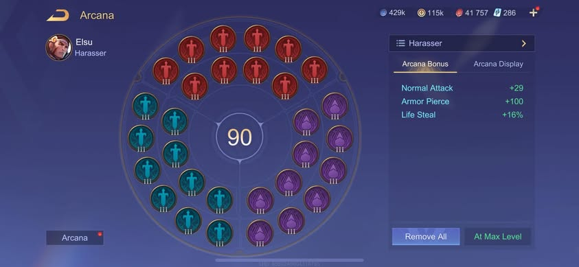

ngọc elsu thì chỉ có một build chuẩn duy nhất đó chính là
10 viên Đỏ III Công vật lý/Xuyên giáp
10 viên Xanh III Công vật lý/Xuyên giáp
10 viên Tím III Hút máu

phù hiệu elsu thì có 2 build , tôi thì hay chơi build đầu tiên khiến
mỗi cú bắn chất lượng hơn